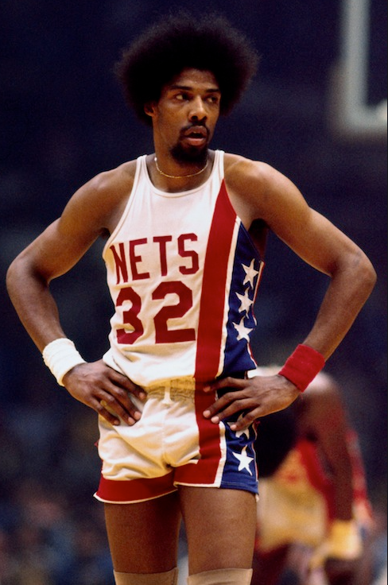
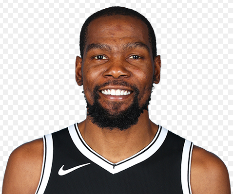

Nets

The Brooklyn Nets are an American professional basketball team based in the New York City borough of Brooklyn. The Nets compete in the National Basketball Association (NBA) as a member of the Atlantic Division of the Eastern Conference. The team plays its home games at Barclays Center. They are one of two NBA teams located in New York City; the other is the New York Knicks. The club was established in 1967 as a charter franchise of the NBA's rival league, the American Basketball Association (ABA). They played in New Jersey as the New Jersey Americans during their first season, before relocating to Long Island, New York, in 1968 and changing their name to the New York Nets. During this time, the Nets won two ABA championships (in 1974 and 1976). In 1976, the ABA merged with the NBA, and the Nets were absorbed into the NBA along with three other ABA teams (the San Antonio Spurs, Indiana Pacers, and Denver Nuggets), all of whom remain in the league to this day.
In 1977, the team returned to New Jersey and played as the New Jersey Nets from 1977 to 2012. During this period, the Nets won two consecutive Eastern Conference championships (in the 2001–02 and 2002–03 seasons), but failed to win a league title. In the summer of 2012, the team moved to Barclays Center, and took its current geographic name.
Julius Winfield Erving II (born February 22, 1950), commonly known by the nickname Dr. J, is an American retired basketball player. Regarded as one of the greatest and most influential basketball players of all time, Erving helped legitimize the American Basketball Association (ABA) and was the best-known player in that league when it merged into the National Basketball Association (NBA) after the 1975–76 season. Erving won three championships, four Most Valuable Player Awards, and three scoring titles with the ABA's Virginia Squires and New York Nets (now the NBA's Brooklyn Nets) and the NBA's Philadelphia 76ers. He is the eighth-highest scorer in ABA/NBA history with 30,026 points (NBA and ABA combined). He was well known for slam dunking from the free throw line in slam dunk contests and was the only player voted Most Valuable Player in both the ABA and the NBA. The basketball slang of being posterized was first coined to describe his moves. Erving was inducted in 1993 into the Basketball Hall of Fame and was also named to the NBA's 50th Anniversary All-Time team. In 1994, Erving was named by Sports Illustrated as one of the 40 most important athletes of all time. In 2004, he was inducted into the Nassau County Sports Hall of Fame. Many consider him one of the most talented players in the history of the NBA; he is widely acknowledged as one of the game's best dunkers. While Connie Hawkins, "Jumping" Johnny Green, Elgin Baylor, Jim Pollard, and Gus Johnson performed spectacular dunks before Erving's time, Erving brought the practice into the mainstream. His signature dunk was the "slam" dunk, since incorporated into the vernacular and basic skill set of the game in the same manner as the "crossover" dribble and the "no look" pass. Before Erving, dunking was a practice most commonly used by the big men (usually standing close to the hoop) to show their brutal strength which was seen as style over substance, even unsportsmanlike, by many purists of the game.However, the way Erving utilized the dunk more as a high-percentage shot made at the end of maneuvers generally starting well away from the basket and not necessarily a "show of force" helped to make the shot an acceptable tactic, especially in trying to avoid a blocked shot.Although the slam dunk is still widely used as a show of power, a method of intimidation, and a way to fire up a team (and spectators), Erving demonstrated that there can be great artistry and almost balletic style to slamming the ball into the hoop, particularly after a launch several feet from that target.
Kevin Wayne Durant (/dʊrænt/; born September 29, 1988) is an American professional basketball player for the Brooklyn Nets of the National Basketball Association (NBA). He played one season of college basketball for the University of Texas, and was selected as the second overall pick by the Seattle SuperSonics in the 2007 NBA draft. He played nine seasons with the franchise, which became the Oklahoma City Thunder in 2008, before signing with the Golden State Warriors in 2016, winning back-to-back championships in 2017 and 2018. Durant was a heavily recruited high school prospect who was widely regarded as the second-best player in his class. In college, he won numerous year-end awards and became the first freshman to be named Naismith College Player of the Year. As a professional, he has won two NBA championships, an NBA Most Valuable Player Award, two Finals MVP Awards, two NBA All-Star Game Most Valuable Player Awards, four NBA scoring titles, the NBA Rookie of the Year Award, and two Olympic gold medals. Durant has also been selected to nine All-NBA teams and ten NBA All-Star teams.